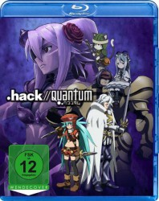

#2129 hack//Quantum: Walking Party
 
 IMDB-Wertung: 6.9 / 10
IMDB-Wertung: 6.9 / 10  Metascore: 0
Metascore: 0 
Tobias, Mary, and Sakuya challenge the impregnable "The One Shin", but they lose their way in the maze and unintentionally trap other guild members. A mysterious cat is watching their blunder. Is it another player character or NPC?
Jahr: 2010
Dauer: undefiniert Minuten
FSK: 12
Land: Japan Studio: I-On New MediaTonspuren: DTS - ,
Untertitel: Deutsch,
Auflösung: 1080p (1920x1080) Größe: 3082 MB
Genre: Action, Thriller, Sci-Fi, Abenteuer, Animation/Trick, Mystery
Regisseur: Masaki Tachibana
Drehbuch: Tatsuya Hamazaki
Soundtrack: Kô Ôtani
Darsteller:
Datei: X:\HD-Anime\hackQuantum Walking Party (2010, FSK12, 1920x1080).mkv seit 07.10.2015
Festplatte: Gemischt-01+Anime
 Es gibt insgesamt 43 Filme in der Gruppe 'HD-Anime'
Es gibt insgesamt 43 Filme in der Gruppe 'HD-Anime'